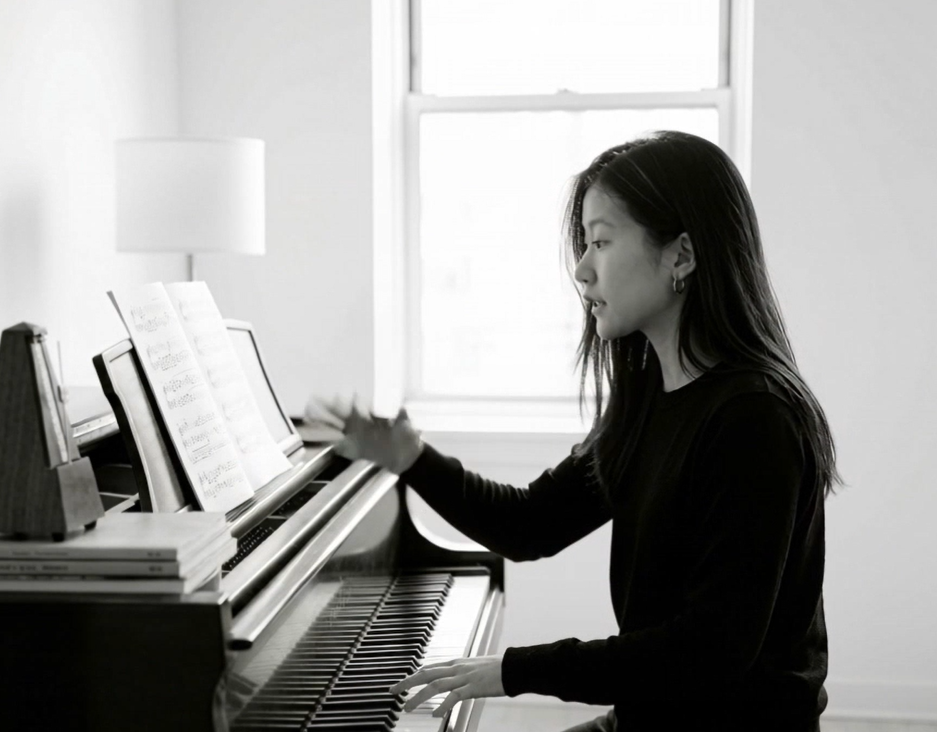

01
これから始める / 基礎から
作曲やDTMを始めたい方、楽譜や音楽理論の土台を作品につなげたい方へ。
作曲レッスンを見るATELIER COMPOSITION SON
Atelier Composition Son は、作曲・理論・音の実践を、個々の制作や学習に合わせて扱う小さなオンラインアトリエです。

ジュネーブ高等音楽院
音楽教育修士
IRCAM作曲研究課程
2021-2022
スイスの音楽院での
指導経験
日本・スイス・フランスでの
制作実践
WHO THIS IS FOR
01
作曲やDTMを始めたい方、楽譜や音楽理論の土台を作品につなげたい方へ。
作曲レッスンを見る02
制作中の曲、音源、楽譜、DAWプロジェクトをもとに、構成や技術を整理したい方へ。
DTMレッスンを見る03
音大・芸大受験、海外音楽院、公募、現代音楽、電子音響の作品を準備したい方へ。
理論・受験内容を見るWHAT YOU CAN STUDY
01
02
03
受験、ポートフォリオ、公募、継続プロジェクトも個別に扱います。
HOW IT WORKS
現在の経験、作りたい音、使っている道具、困っている点を整理します。
楽譜、音源、DAWプロジェクト、課題を使い、必要な理論と技術を扱います。
具体的な改善点と、レッスン後に取り組む次の課題を明確にします。

INSTRUCTOR
Composer / Artist / Educator
神奈川県生まれ。作曲家・アーティスト。クラシック音楽の理論的基礎から、現代音楽、電子音響、サウンドデザイン、Max/MSP、AIを用いた創作までを横断し、ひとりひとりの感覚や関心から作品を育てることを重視しています。
CONCEPT
このアトリエでは、「正しい作曲法」を一方向に伝えるだけではなく、受講者自身の感覚・関心・音の記憶から出発します。楽譜を書くこと、DAWで音を編集すること、録音素材を変形すること、アルゴリズム、AI、音楽プログラミング、PythonやChatGPTのような思考ツールを使うこと。そのすべてを、作品をつくるための手段として扱います。
一般的な作曲・DTMレッスンよりも、個人の創作プロセスに深く関わります。まだ何を作りたいかわからない段階でも、すでに作品やポートフォリオを持っている段階でも、目的に応じて内容を組み立てます。
01
理論やソフト操作を目的化せず、作品を作るために必要な知識と技術を選びます。
02
音色、質感、空間、身体性、時間感覚を丁寧に扱い、音楽以前の感覚を作品へ接続します。
03
DAW、Max/MSP、録音、AI、Python、ChatGPT、Codex、電子音響、映像との関係など、現在の制作環境に対応します。
LEARNING TOOLS / THINKING TOOLS
和声課題や対位法課題を自分で確認できる、無料の learning tools / thinking tools を公開しています。検出結果はあくまで機械的な確認であり、音楽的な判断や作曲上の意図までは完全には扱えません。「なぜ指摘されたのか分からない」「修正方法を知りたい」「受験課題として確認したい」場合は、メール添削レッスンまたは通常レッスンで、考え方から個別に扱います。
01
SATB 4声体のMusicXMLファイルを使って、連続5度・連続8度などを確認する学習補助ツールです。
和声チェッカーを使う02
2声対位法の基礎的な進行、音程、禁則を確認するための学習補助ツールです。
対位法チェッカーを使う03
波形、フィルター、エンベロープ、LFOなどをブラウザ上で試しながら、音の合成について学べる学習用シンセサイザーです。
簡易シンセサイザーを使うSELECTED WORK
VOICES
50代女性
オンラインでも通信環境が安定していて、安心して受講できました。こちらの希望や学びたい内容を丁寧に聞いていただき、レッスンに反映してもらえた点がとても良かったです。
30代男性
自分の現在のレベルや目的に合わせて、必要な内容を整理しながら教えていただけたのが印象的でした。短い時間の中でも、今後どのように学んでいけばよいかが明確になりました。
10代女性
限られた時間の中でも、とても分かりやすく丁寧に教えていただきました。初めて学ぶ内容でしたが、楽典の面白さや奥深さを感じることができました。
PRICING
料金は事前に明記し、内容とペースを相談しながら決めます。
作曲・理論・DTMの基礎を、制作に合わせて扱います。
4800円 / 60分
作品、楽譜、音源、和声・対位法、分析、AI音源の相談。
7500円 / 60分
継続して制作・学習を進めたい方向け。
28000円 / 月4回
楽譜・音源・課題への文章フィードバック。
1800円〜
FAQ
可能です。楽譜・DTM・音楽理論の経験が少ない場合でも、現在の関心や作りたい方向を確認しながら始めます。このアトリエでは、単なる操作説明よりも、音をどう聴き、何を作品として考えるかを重視します。
はい。音大・芸大受験、海外音楽院、作品提出、公募、ポートフォリオ相談に対応します。専門的な内容は Individual Session または Monthly Atelier で扱います。
可能です。作品講評、制作方針、ポートフォリオ、機材・ソフトの選び方など、1回のみの相談にも Individual Session で対応します。
Reaper、Ableton Live、Logic Pro、Max/MSP、一般的なDAW、MIDI・OSCを使った制作などに対応します。必要に応じてAI生成ツールや映像制作との接続も扱います。
FREE CONSULTATION
現在の経験、作りたい音、使用しているDAWや道具、いま困っていることを確認し、どの内容から始めるとよいかを一緒に整理します。
30分無料相談を予約するメール添削 / メールで問い合わせる / 規約を見る